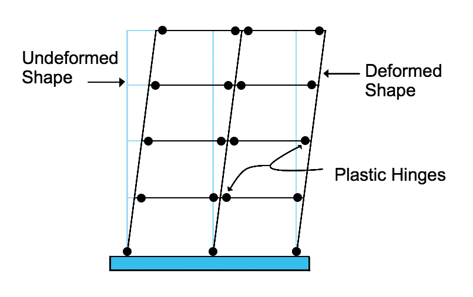

Steel Moment Frames
×
Fun Fact
This connection was very common before the Northridge earthquake, which failed afterward from brittle fracture. Alternatives to reduce this possibility were considered such as welding with strong fracture toughness, inspection, or using prequalified connections by AISC.

